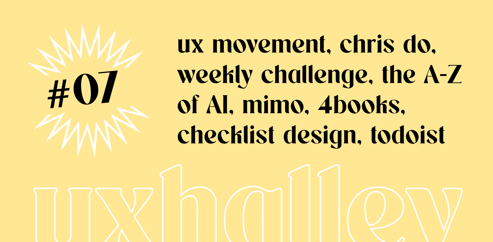

UX Halley, newsletter per designer
uxhalley, edizione #07
02 gennaio 2023 — UX Halley: una newsletter bisettimanale che raccoglie news e links utili sulla UX. Un progetto dell'ecosistema The UX North Star. Le regole sono semplici: 5 minuti di lettura per link utili e news dal mondo della UX. Se ti interessa, lo approfondisci. Se ti piace, lo condividi. Facile facile.
Immagine di copertina dell'edizione di UX Halley, newsetter per designer
Link per designer suggerito nell'edizione di UX Halley, newsletter per designer
un articolo al giorno
Da bravi italiani che conoscono troppo poco l'inglese (e io sono tra quelli, lo ammetto) il mio consiglio è il seguente: leggi un articolo al giorno, sul design, la ricerca, la UX, in inglese. Porti avanti il tuo livello di comprensione della lingua, apprendi nuovi termini e nuovi concetti che potrai spenderti nel lavoro quotidiano. Due piccioni con una fava in sostanza.
Link per designer suggerito nell'edizione di UX Halley, newsletter per designer
checklist design
Inizio anno, tempo di tirare una linea e proiettarsi sull'anno nuovo. Io spesso uso questi momenti per creare dei template, degli assets, dei materiali utili al mio lavoro. Qui trovi una risorsa che può fare al caso tuo: una checklist molto utile, molto approfondita per alcuni aspetti e molto semplice da usare, per non perdersi mai nulla (e per imparare anche qualcosa).
Link per designer suggerito nell'edizione di UX Halley, newsletter per designer
conosci Chris Do?
I social sono una cosa meravigliosa, se usati nel modo corretto (o nel modo proficuo). La tua social bubble, ovvero quella bolla di contenuti, informazioni, persone che ti appaiono nei vari feed, rappresentano la tua "realtà" digitale. Se segui persone che non ti ispirano, che non hanno niente da insegnarti e che per la maggior parte affossano la tua quotidianeità, come puoi pensare di vivere bene, o meglio? Diversamente, se scegli di seguire persone che ti raccontano, insegnano, ispirano, puoi veramente cambiare il punto di vista e darti, a costo zero, un vero e proprio boost.
Link per designer suggerito nell'edizione di UX Halley, newsletter per designer
weekly challenges
Invece di passare i weekend sul divano (febbraio e marzo sono veramente tosti, lo sappiamo bene che spesso la stanchezza per freddo, cambio di stagione e "inizio anno" vince su tutto) ti consiglio di investire, di tanto in tanto, il tuo tempo per allenarti. Allena il tuo fisico, possibilmente quotidianamente, e anche la tua "mente". Qui una newsletter che ti invia ogni settimana un esercizio. Semplicissimo e molto utile.
Link per designer suggerito nell'edizione di UX Halley, newsletter per designer
formazione AI gratis
L'intelligenza artificiale non è più quella parola "finta" e dall'effetto wow che si infilava nei discorsi da intellettuali di qualche anno fa, ma è realtà. Non è detto che il tuo mestiere, che sia di design o meno, ne debba fare un uso diretto e che tu ne debba conoscere al punto di saper tenere un convegno, ma tra questo e non sapere nulla c'è una grandissima differenza.
Link per designer suggerito nell'edizione di UX Halley, newsletter per designer
skill di sviluppo x des
10 minuti al giorno, invece che passarli a giocare a Fortnite, Clash of Clans o Call of Duty, investili così. Mimo è un'app che ti insegna con un percorso strutturato e piccoli esercizi pratici a sviluppare. Non diventerai dev, chiariamoci, ma ti aiuterà a pensare come tale e questo sappi che non fa mai male, nel lavoro ma anche in contesti quotidiani dove praticamente è tutto digitalizzato (e già solo questo dovrebbe bastare a convincerti che ha senso investire in questi temi).
Link per designer suggerito nell'edizione di UX Halley, newsletter per designer
4books
Che palle correre o camminare, però quanto fa bene. L'ho sentito dire tante volte e io sono uno di quelli: lo faccio perché mi scarica, perché so che mi fa bene e perché mi serve, ma 40 minuti mi annoiano, soprattutto se in palestra e non per strada dove comunque hai degli stimoli nuovi. Ecco, io uso 4books: ottimi libri, riassunti bene, raccontati meglio. Invece che ammazzarmi di Tiktok, invece che annoiarmi male, invece che sentire la solita musica, mi alleno e investo su me stesso.
Link per designer suggerito nell'edizione di UX Halley, newsletter per designer
bonus track
Nuovo anno, nuove abitudini, tante cose da fare. Ma come farle se poi te le perdi per strada? Io uso Todoist. A breve farà una super guida su come pianificarsi la vita per vivere letteralmente meglio, intanto ti consiglio di iniziare ad usare un task manager per darti un fortissimo supporto cognitivo.